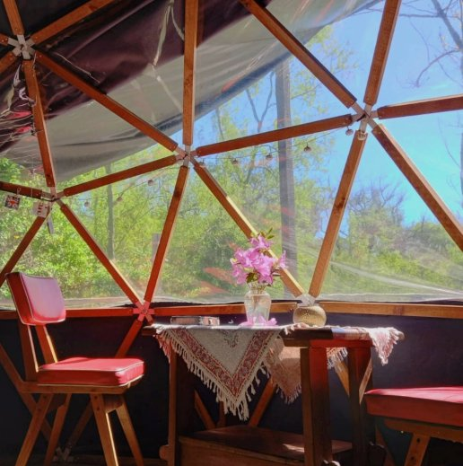
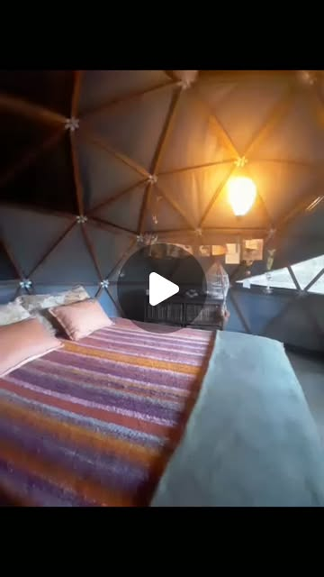
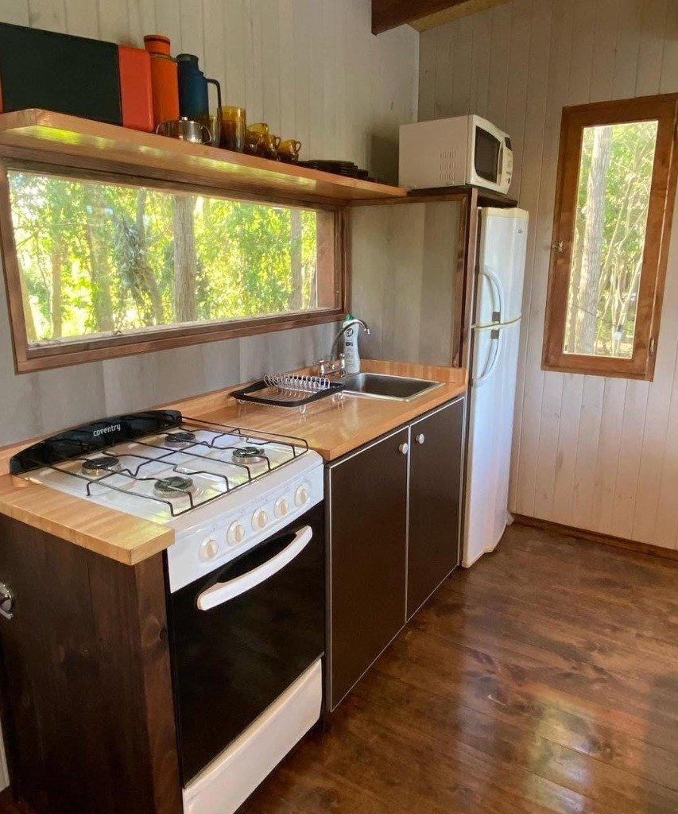

El Domo de la Selva
Una estructura geodésica de madera de 4 metros de diámetro diseñada para la intimidad y la inmersión en la naturaleza. Dormir bajo las copas de los árboles con luz de luna y despertar con el sonido del agua.
Baño con techo transparente
Cocina-comedor vidriada
Sommier matrimonial & sábanas
Muelle privado & canoa propia
Parrilla chulengo & fogón
Wi-Fi & aire acondicionado